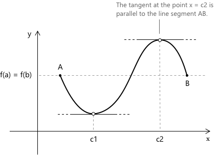

Теорема Ролля
Формулювання
Дано функцію \(f(x)\), визначену на замкненому та обмеженому проміжку \([a, b]\), таку, що виконуються наступні умови:
- \(f(x)\) є неперервною на замкненому проміжку \([a, b]\).
- \(f(x)\) є диференційовною на відкритому проміжку \((a, b)\).
- \(f(a) = f(b)\).
Тоді існує принаймні одна точка \(c \in (a, b)\), така що \(f’ \left(c \right) = 0 \)
Теорема Ролля є особливим випадком теореми про середнє значення (Лагранжа). За тих самих гіпотез неперервності на \([a,b]\) та диференційовності на \((a,b)\), якщо \( f(a) = f(b) \), то кутовий коефіцієнт січної дорівнює нулю і існує \( c \in (a,b) \), така що \( f’(c) = 0 ).
Геометрична інтерпретація теореми Ролля
З геометричної точки зору, теорема Ролля стверджує, що завжди існує принаймні одна точка \(c\), де дотична до графіка паралельна прямій \(AB\), що проходить через точки \(A\) та \(B\), і, таким чином, паралельна осі \(x\).

Теорема Ролля допомагає проілюструвати ідею про те, що функція, яка набуває одного й того самого значення у двох точках, повинна мати десь між ними горизонтальну дотичну. Ця концепція лежить в основі багатьох практичних застосувань, таких як пошук піка параболічної траєкторії.
Доведення
Згідно з теоремою Вейєрштрасса, оскільки \(f(x)\) є неперервною на \([a, b]\), вона досягає максимуму та мінімуму на \([a, b]\). Нехай:
\[M = f(x_M), \quad m = f(x_m)\]
де \(x_M, x_m \in [a, b]\) — точки, в яких \(f(x)\) досягає свого максимуму \(M\) та мінімуму \(m\) відповідно. Якщо \(M = m\), функція \(f(x)\) є сталою, і, отже, для всіх \(x \in (a, b)\) \(f’(x) = 0\). У цьому випадку теорема є тривіально правильною.
Тепер припустимо, що \(M > m\). Оскільки \(f(a) = f(b)\), якби і максимум, і мінімум досягалися лише в кінцевих точках, ми б мали \(f(a) = f(b) = M = m\), що суперечить \(M > m\). Отже, принаймні один із \(M\) або \(m\) досягається в деякій внутрішній точці \(c \in (a, b)\).
- \(f(x)\) досягає локального максимуму в \(c \in (a, b)\): оскільки \(f\) є диференційовною в \(c\) і \(c\) є внутрішнім екстремумом, за теоремою Ферма похідна задовольняє рівності \(f’ \left(c \right) = 0.\)
- \(f(x)\) досягає локального мінімуму в \(c \in (a, b)\): аналогічно, за теоремою Ферма, похідна задовольняє рівності: \(f’ \left(c \right) = 0.\)
Таким чином, в обох випадках існує принаймні одна точка \(c \in (a, b)\), така що \(f’ \left(c \right) = 0.\)
Невиконання гіпотез у теоремі Ролля
Теорема Ролля є умовним твердженням, і її висновок є правильним лише тоді, коли всі три гіпотези виконуються одночасно. Щоб продемонструвати необхідність кожної умови, доцільно проаналізувати випадки, коли одна з гіпотез відсутня.
Перша гіпотеза вимагає неперервності на замкненому проміжку \([a, b]\), тому розглянемо наступну функцію:
\[ f(x) = \begin{cases} x & \text{якщо } x \in [0, 1) \\[0.5em] 0 & \text{якщо } x = 1 \end{cases} \]
Ця функція задовольняє рівності \(f(0) = f(1) = 0\) і є диференційовною на \((0, 1)\) з похідною \(f’(x) = 1\) на всьому відкритому проміжку. Однак не існує точки \(c \in (0, 1)\), де \(f’(c) = 0\). Це стається через розрив першого роду в точці \(x = 1\), що порушує гіпотезу неперервності. Похідна залишається ненульовою, оскільки функція строго зростає до моменту розриву.
Друга гіпотеза вимагає диференційовності на відкритому проміжку \((a, b)\). Функція абсолютного значення \(f(x) = |x|\) на \([-1, 1]\) є неперервною на замкненому проміжку і задовольняє рівності \(f(-1) = f(1) = 1\), отже, перша та третя гіпотези виконуються. Однак у точці \(x = 0\) функція має «злам», і похідна там не існує.
Ліва та права похідні в цій точці дорівнюють \(-1\) та \(1\) відповідно, що вказує на відсутність диференційовності на всьому \((-1, 1)\). Відповідно, всередині проміжку немає горизонтальної дотичної, що доводить принциповість диференційовності.
Третя гіпотеза вимагає, щоб значення функції в кінцевих точках були рівними. Строго монотонна функція може бути неперервною та диференційовною всюди, проте може не мати внутрішньої стаціонарної точки. Наприклад, \(f(x) = x\) на \([0, 1]\) задовольняє \(f(0) \neq f(1)\).
Оскільки \(f’(x) = 1\) для всіх \(x \in (0, 1)\), похідна ніколи не перетворюється на нуль. Це демонструє, що рівність значень у кінцевих точках є необхідною для гарантування наявності внутрішньої стаціонарної точки, незалежно від інших властивостей.
Приклад
Розглянемо функцію:
\[ f(x) = x^2 - 4x + 3 \]
на замкненому проміжку \( [1, 3] \). Ми хочемо перевірити, чи застосовна теорема Ролля, і якщо так, знайти значення \( c \), таке що \( f^\prime ( c ) = 0 \).
Спочатку перевіримо три умови, що вимагаються теоремою Ролля:
-
Неперервність: функція є поліномом, тому вона неперервна на всій дійсній прямій, включаючи проміжок \( [1, 3] \).
-
Диференційовність: оскільки \( f(x) \) є поліномом, вона є диференційовною на \( (1, 3) \).
-
Тепер перевіримо, що значення функції на кінцях проміжку однакові:
\[ f(1) = 1^2 – 4(1) + 3 = 0 \\[0.5em] f(3) = 3^2 – 4(3) + 3 = 0 \]
Оскільки всі три умови виконані, теорема Ролля гарантує, що існує принаймні одне значення \( c \in (1, 3) \), таке що \( f^\prime ( c ) = 0 \). Знайдемо його.
Обчислимо похідну: \[ f’(x) = 2x – 4 \]
Тепер розв'яжемо: \[ f^\prime ( c ) = 0 \rightarrow 2c – 4 = 0 \rightarrow c = 2 \]
Отже, точка \( c = 2 \) лежить у проміжку \( (1, 3) \), і в цій точці похідна дорівнює нулю. Це означає, що функція має горизонтальну дотичну в точці \( x = 2 \), як і передбачалося теоремою Ролля.
Вправи: перевірте, чи застосовна теорема Ролля до наступних функцій, і якщо так, знайдіть точку \( c \), де \( f^\prime ( c ) = 0. \)
-
\[\text{1. } \quad f(x) = \sqrt{4 - x^2} \] розв'язання
-
\[\text{2. } \quad f(x) = |x - 1| \] розв'язання
Вправа 1
Розглянемо наступну функцію на замкненому проміжку \( [-2, 2] \):
\[ f(x) = \sqrt{4 – x^2} \]
Це не поліном, але ми все одно можемо перевірити, чи застосовна теорема Ролля. Функція є квадратним коренем з квадратичного виразу, і вона визначена та неперервна для всіх \( x \), таких що \( 4 – x^2 \geq 0 \). Ця нерівність виконується саме на проміжку \( [-2, 2] \), тому функція неперервна на всьому проміжку.
Функція є диференційовною на відкритому проміжку \( (-2, 2) \), оскільки немає кутів або гострих точок, а квадратний корінь є гладким там, де він визначений. Похідна функції має вигляд:
\[f’(x) = \frac{-x}{\sqrt{4 - x^2}}\]
Похідна розбігається при \(x \to \pm 2\), що вказує на те, що функція не є диференційовною на кінцях проміжку. Однак це не порушує теорему Ролля, яка вимагає диференційовності лише на відкритому проміжку \((-2, 2)\).
Перевіримо значення функції при \( x = -2 \) та \( x = 2 \):
\[ \begin{aligned} &f(-2) = \sqrt{4 - (-2)^2} = \sqrt{0} = 0 \\[0.5em] &f(2) = \sqrt{4 - 2^2} = \sqrt{0} = 0 \end{aligned} \]
Оскільки значення функції на кінцях проміжку рівні, всі умови теореми Ролля виконані.
Тепер застосуємо теорему. Вона говорить нам, що має бути принаймні одне значення \( c \in (-2, 2) \), таке що \(f’( c ) = 0\). Спочатку обчислимо похідну:
\[ f^\prime(x) = \frac{-x}{\sqrt{4 - x^2}} \]
Тепер розв'яжемо:
\[ f^\prime ( c ) = 0 \Rightarrow \frac{-c}{\sqrt{4 - c^2}} = 0 \rightarrow c = 0 \]
Функція задовольняє всім умовам теореми Ролля, і точка \( c = 0 \) є значенням, при якому похідна дорівнює нулю. Отже, функція має горизонтальну дотичну в точці \( x = 0. \)
Вправа 2
Тепер розглянемо наступну функцію на замкненому проміжку \( [0, 2] \):
\[ f(x) = |x – 1| \]
Функція \( f(x) = |x – 1| \) є функцією модуля. Вона неперервна на всій дійсній прямій, включаючи проміжок \( [0, 2] \).
Щоб проаналізувати \( f(x) = |x – 1| \), зауважимо наступне: \[ f(x) = \begin{cases} 1 - x & \text{якщо } x < 1 \\[0.5em] x – 1 & \text{якщо } x \geq 1 \end{cases} \]
Ліва та права похідні в точці \( x = 1 \) обчислюються наступним чином. Ліва похідна дорівнює:
\[ \lim_{h \to 0^-} \frac{f(1+h) – f(1)}{h} = \lim_{h \to 0^-} \frac{|h|}{h} = -1 \]
Права похідна дорівнює: \[ \lim_{h \to 0^+} \frac{f(1+h) – f(1)}{h} = \lim_{h \to 0^+} \frac{|h|}{h} = 1 \]
Оскільки ліва та права похідні не рівні, похідна в точці \( x = 1 \) не існує.
Для застосування теореми Ролля функція має бути диференційовною на відкритому проміжку \( (0, 2) \). Але тут виникає проблема: у точці \( x = 1 \) функція має злом, що означає, що похідна в цій точці не існує. Отже, друга умова теореми Ролля не виконується.
Вибрана література
-
Гарвардський університет О. Кнілл. Теорема про середнє значення
-
Університет Каліфорнії в Дейвісі Дж. Хантер. Диференційовні функції
-
Вашингтонський університет Дж. Берк. Теорема Вейєрштрасса про екстремальні значення
-
Чикагський університет Дж. Мерфі. Топологічні доведення теорем про екстремальні та проміжні значення